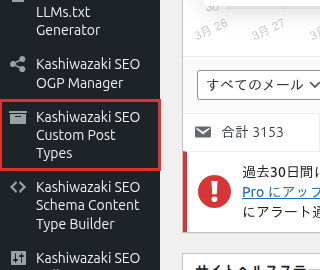

インストール・初期設定
Kashiwazaki SEO Custom Post Types のインストールから初期設定までの手順を説明します。外部依存がないため、プラグインを有効化するだけですぐにカスタム投稿タイプの管理を開始できます。
インストール方法
方法1: WordPress管理画面からインストール
WordPress管理画面にログインし、左メニューから プラグイン > 新規追加 を選択します。

検索ボックスに「Kashiwazaki SEO Custom Post Types」と入力し、表示されたプラグインの 今すぐインストール ボタンをクリックします。
インストール完了後、有効化 ボタンをクリックします。
方法2: ZIPファイルからインストール
プラグインのZIPファイルをダウンロードします。
WordPress管理画面の プラグイン > 新規追加 > プラグインのアップロード からZIPファイルを選択し、今すぐインストール をクリックします。
インストール完了後、有効化 ボタンをクリックします。
初期設定
プラグインを有効化すると、WordPress管理画面の左メニューに「Kashiwazaki SEO Custom Post Types」の管理ページが追加されます。
設定手順
WordPress管理画面の左メニューから Custom Post Types を選択して管理画面を開きます。
新規投稿タイプを追加 ボタンをクリックし、投稿タイプ名（スラッグ）、ラベル、公開設定などを入力します。
必要に応じて、親投稿タイプの設定や階層構造を設定します。
設定を保存すると、リライトルールが自動的に更新され、新しい投稿タイプがすぐに利用可能になります。
ヒント
プラグインは有効化時にデータベースの初期化を自動で行います。カスタムテーブルは作成せず、wp_optionsテーブルのみを使用するため、特別なデータベース設定は不要です。
動作要件の確認
| 項目 | 要件 |
|---|---|
| WordPress | 5.0 以上 |
| PHP | 7.0 以上 |
| 外部依存 | なし |
メモ
本プラグインは管理画面専用のツールです。フロントエンドへのHTML出力、JSON-LD出力、metaタグ出力は一切行いません。外部HTTP通信、Cronジョブ、メール送信も使用しないため、サーバー環境に特別な要件はありません。
アンインストール
プラグインを無効化・削除する前に、以下の点にご注意ください。
注意
プラグインを無効化すると、本プラグインで登録したカスタム投稿タイプはWordPressに認識されなくなります。投稿データ自体はデータベースに残りますが、管理画面やフロントエンドからアクセスできなくなります。再度有効化すれば、投稿データは元通り表示されます。